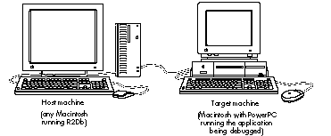
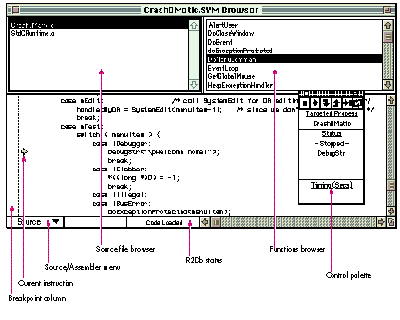
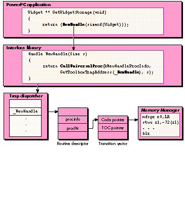

Debugging on a PowerPC processor-based Macintosh is just like debugging on any
other Macintosh, only different. You should bring along the debugging skills you
carefully honed on 680x0-based machines but expect the mechanics of debugging to be
easier thanks to the PowerPC two-machine debugger. We give you basic instructions
and provide a sample program that you can crash like crazy while you learn to debug
PowerPC code.
The most important thing to realize when you set out to develop (and hence debug) for
the PowerPC processor-based Macintosh is that this beast is still a Macintosh. Besides
having a 680x0 emulator, the CPU has a Macintosh Toolbox in ROM, low-memory
globals, a trap dispatcher, and 680x0 interrupt vectors. Since it retains so many
elements you know and love, you don't have to throw away any of what you've learned
about debugging with MacsBug, TMON, or any other debugger.
On the other hand, if all the new Macintosh had up its sleeve were 680x0 emulation,
we wouldn't be writing this article. As described in "Making the Leap to PowerPC"
indevelop Issue 16 and in the imminentInside Macintosh: PowerPC System Software ,
the PowerPC runtime architecture is new and improved. A couple of new managers --
the Code Fragment Manager and the Mixed Mode Manager -- help bridge the software
gap between the 680x0 emulator and the PowerPC 601 microprocessor, and introduce
some new twists and turns in how code is loaded and executed.
This article introduces you to the two-machine debugger developed for debugging
PowerPC code. It then lays down some debugging ground rules, describes the
circumstances in which your program might end up in the debugger, and discusses
extensions and dcmds old and new to assist you in debugging. Finally, it talks about how
to debug even in the absence of the debugger nub.
On this issue's CD you'll find CrashOMatic, a sample program you can use to explore
the debugger without risking your own code. CrashOMatic is designed to cause crashes
or demonstrate unusual aspects of PowerPC debugging. When launching CrashOMatic,
hold down the Control key to force the debugger to take control.
To experiment with debugging CrashOMatic and to develop and debug native PowerPC
applications, you'll need the Macintosh on RISC Software Developer's Kit (soon to be
available from APDA) or one of the other PowerPC development kits available from
third parties. The Macintosh on RISC Software Developer's Kit contains R2Db, an
MPW-based cross-compiler called PPCC, and other assorted tools used for building
PowerPC applications.
Apple's new debugger for the PowerPC processor-based Macintosh is called R2Db, for
"RISC two- machine debugger." (As this issue goes to press, the fate of this name is
undecided, so it may be different by the time you read this.) This modernized cross
between ReAnimator and SourceBug allows for single stepping, setting breakpoints,
and disassembling PowerPC code fragments. Like MacsBug, it's a systemwide low-level
debugger; unlike MacsBug, R2Db also enables source-level debugging and is designed
for debugging PowerPC applications. But as we hinted at earlier, you probably don't
want to throw away your MacsBug skills just yet. R2Db can be used in conjunction
with MacsBug, as explained in the section "Working With dcmds and MacsBug."
THE TWO-MACHINE SCHEME
R2Db is a two-machine debugger, as illustrated in Figure 1. The R2Db application
runs on thehost machine , which can be any Macintosh at all, preferably one with a
large screen and enough CPU power to run a debugger built with MacApp 3.0. The part
of R2Db called the PPC Debugger Nub runs on thetarget machine , the PowerPC
processor-based Macintosh running the program you want to debug. The host machine
acts as a remote control panel for the target. The machines need to be connected by a
standard 8-pin printer cable.
Using two machines to debug code has several advantages. For one, a bug in your
application that locks up the keyboard can't bring your debugging to a halt. For
another, you can debug interrupt- level code without having to have incredible luck.
(Can you say "MacsBug caused the exception"?) Throughout the development of
Macintosh with PowerPC, the system software team relied on R2Db to debug such
nasty (but necessary) things as the Memory and Resource Managers. Running a
single-machine debugger on such shaky ground can lead to premature aging and the
loss of some motor functions.
On the other hand, two-machine debugging has the disadvantage of requiring two
Macintosh systems. (Oh darn, I guess it's time to ask the boss for another Macintosh
Quadra.) Don't worry, though -- Apple (and others) are busy working on
single-machine debugging environments for those folks who develop on smaller
budgets.

Figure 1 The Two-Machine Debugging Scheme
R2DB BASICS
When you first launch R2Db, it presents a Standard File dialog box from which you
choose an xSYM file to use when debugging. If you've used SourceBug, you know that a
SYM file bundles together information about the application's source and object code
and enables the debugger to associate a range of machine-language instructions with a
line of C source code. The xSYM file is an extended version of the MPW SYM file that
supports both 680x0 and PowerPC code. To support debugging "fat" applications --
those with both 680x0 and PowerPC versions packaged together -- twodifferent kinds
of SYM files are needed: the SYM file for the 680x0 version and the xSYM file for the
PowerPC version.
When a PowerPC application is being debugged at the source level, its xSYM file and all
its source code must be available on the machine running R2Db. Without the xSYM
file, your application can still be debugged, but not at the source level.
When you choose an xSYM file, the R2Db browser window appears. This window,
which will be familiar to users of Smalltalk or MacApp's Mouser, enables you to
examine source code by file and function. Choosing Go To Debugger from the Debug
menu makes the browser window look like the one shown in Figure 2. In the top left
corner, a list of source files is presented. When a source file is chosen, the functions
belonging to that file are listed in the top right corner. (Sorry, C++ fans -- there's
no object browsing in this release of R2Db.) The status of the target machine, along
with a few stepping controls, appears in a control palette.
A small arrow points to the current instruction or line of code being executed.
Breakpoints can be set by clicking to the left of the source display; a small hexagonal
"stop sign" marks any breakpoints you've set. Double-clicking a breakpoint enables
you to choose from a myriad of useful variants on the traditional behavior. Finally,
you can switch between assembly and source views by using the pop-up menu at the
lower left of the display. To see exactly how the compiler translates your C code into
native PowerPC code, select a line of source code and then switch to the assembly view,
where it's highlighted.

Figure 2The R2Db Browser During CrashOMatic Debugging
Lurking under the R2Db menu bar are some useful commands, including commands to
get register displays, memory dumps, and even 680x0 disassembly. If you ever find
yourself stopped outside ofyour application, choose Show Instructions from the Views
menu to get a disassembly at the current point of execution. This can also be helpful
when debugging without an xSYM file.
R2DB IDIOSYNCRASIES
Like all things in life, R2Db has a couple of idiosyncrasies you should be aware of.
Debugger versus SysBreak. If you're familiar with SADE and SourceBug, you're
probably accustomed to using SysBreak and SysBreakStr to add high-level breakpoints
to your code. These functions aren't supported by R2Db, so you should use the familiar
Debugger and DebugStr calls that you would normally use with MacsBug or other
low-level debuggers. If a PowerPC debugger isn't installed, these calls are routed to
MacsBug for handling. If you prefer using MacsBug to inspect data structures or log
debugging messages, you can use the functions Debugger68k and DebugStr68k.
Memory Manager access faults. Starting with the Macintosh IIci, Apple added a
hack to the existing Memory Manager to correctly support changes for 32-bit
addressing and NuBusTMexpansion cards. The change involved adding bus error
wrappers within several internal routines to automatically call StripAddress and
retry when a 24-bit handle is passed to the Memory Manager while the machine is
temporarily operating in 32-bit mode. These bus error wrappers don't exist on
68000 machines like the Macintosh Plus, SE, and Classic (a fine reason to test your
software on all sorts of machines).
These handlers also mask a serious problem: fake handles, fake pointers, and fake heap
zones being passed to the Memory Manager. For Macintosh with PowerPC, the Memory
Manager has been completely rewritten and actually preserves this tolerant behavior
-- but with a twist. When any PowerPC debugger is installed, these Memory Manager
exceptions get routed through the debugger to point out the problem to the developer.
We would have added a "feature" to CrashOMatic so that you could see this behavior in
action, but fortunately it doesn't happen that often. Before examining the fields of a
handle or pointer block, the Memory Manager checks a magic cookie in the block as a
first guard against fake handles. If we were to contrive an example without setting that
magic cookie, the HLock call would still return an error code as it should; we just
wouldn't see the bus error handlers get hit.
There are, however, some applications in which you will see the bus error handlers
get hit. Open a file in ResEdit 2.1.1, for example, and you'll see access faults in R2Db.
Choose Propagate Exception from R2Db's Control menu and the Memory Manager will
clean up after ResEdit.
In future versions of Macintosh system software, this compatibility hack will be
removed. Consider yourself warned.
Before you start debugging your PowerPC application, you should commit the following
ground rules to memory. This will ensure that you get off on the right foot.
Rule 1: Always use a nonoptimized build for source-level debugging.RISC
C compilers radically reorder the sequence of instructions when generating optimized
code. This makes straightforward source-level debugging impossible -- imagine
single stepping to the next line of code and having the arrow move to a statement three
lines before where you just were. Following is a little program to demonstrate why
you don't want to do source-level debugging with an optimized build of your code unless
you really know what you're doing. Ignore the fact that "dude" is never initialized
before being used.
void main(void)
{
long counter, dude;
float fooVal = 1.0;
for (counter = 1; counter < 1000; counter++)
{
fooVal = counter * fooVal;
dude++;
}
}
Below is the nonoptimized compiler output. (Incidentally, we compiled this program
using the IBM compiler; if you compile it with PPCC you'll see different results.)
Notice that the basic top-to- bottom structure of the C source is preserved.
Main:
stw r31,-4(SP) ;# Preserve nonvolatile registers (r31)
stwu SP,-128(SP) ;# Create stack frame
;# Variable initialization starts here.
lwz r31,xx(RTOC) ;# Get address of a 1.0
stw r3,152(SP) ;# Save r3 - we are going to use it
lfs fp1,0(r31) ;# Put 1.0 in a register
stfs fp1,56(SP) ;# Put 1.0 into fooVal
;# The FOR loop starts here.
li r3,1 ;# Get a 1
stw r3,60(SP) ;# Put it in counter
liu r4,r0,0x4330 ;# Make floating-point version of counter
stw r4,96(SP)
cmpi cr1,r3,1000 ;# (counter < 1000)?
bgt cr1,Exit ;# Goto end of loop
;# Body of the FOR loop starts here.
Loop:
lwz r3,60(SP) ;# Load counter into register
lfd fp2,8(r31) ;# Make fp_version_of_counter from counter
xoris r3,r3,0x8000
stw r3,100(SP)
lfd fp1,96(SP)
fsub fp1,fp1,fp2
frsp fp2,fp1
lfs fp1,56(SP) ;# Get fp_version_of_counter
fmul fp1,fp1,fp2 ;# fooVal = fooVal * fp_version_of_counter;
frsp fp1,fp1
stfs fp1,56(SP)
lwz r3,64(SP) ;# dude++;
addic r3,r3,1
stw r3,64(SP)
lwz r3,60(SP) ;# counter++
addic r3,r3,1
stw r3,60(SP)
;# Conditional test of FOR loop here.
cmpi cr1,r3,1000 ;# if (counter < 1000)
blt cr1,Loop ;# goto loop
Exit:
lwz r31,124(SP) ;# Restore saved registers (r31)
addic SP,SP,128 ;# Release stack frame
blr ;# Outta here!
The optimized compiler output is shown below. Note the interleaving of instructions
used to initialize fooVal. Also note the radically different loop structure, which has no
straightforward correspondence to the C code -- counter is now zero-based and
decrements, fooVal is calculated in a totally different fashion, and dude is nowhere to
be found in the generated code.
Main:
lwz r3,xxx(RTOC) ;# Get address of a 1.0
li r0,999 ;# counter = 999;
lfd fp1,8(r3) ;# Finish fooVal = 1.0;
fmr fp0,fp1 ;# tmp = fooVal
mtspr CTR,r0 ;# CTR = counter
Loop:
fadd fp0,fp0,fp1 ;# tmp = tmp + fooVal
bdnz loop ;# CTR--; if (CTR != 0) goto loop
blr ;# Outta here!
The moral of this story is that if you want to debug your application by looking at
source code, you should create a special version compiledwithout optimization turned
on. (Of course, the version you ship should be optimized.) If you can't cause the
problem to occur with compiler optimizations turned off, you'll need to become
familiar with debugging techniques involving animal or human sacrifice (or just learn
to love reading optimized PowerPC assembly language).
Rule 2: Enable generation of symbol information by the compiler.It's also
important at build time to enable generation of symbol information by the compiler.
This is analogous to "-sym on" and "-mbg on" for 680x0. The extra information
generated is used by the MPW tools Link and MakeSYM to create the xSYM file that
R2Db uses to enable source-level debugging. Here's a makefile to build a simple
PowerPC program using PPCC (with debugging extras in boldface):
APPNAME = CrashOMatic APPOBJECTS = CrashOMatic.o PPCC = PPCC
PPCCOPTIONS = -w conformance -appleext on-sym on -opt off
PEFOPTIONS = -ft 'APPL' -fc 'GDed' LIBEQUATES = -l InterfaceLib.xcoff=InterfaceLib∂ -l StdCLib.xcoff=StdCLib ∂ -l MathLib.xcoff=MathLib
{APPNAME} ƒƒ {APPOBJECTS}
PPCLink -warn-sym on
∂
{APPOBJECTS} ∂
"{PPCLibraries}"InterfaceLib.xcoff ∂
"{PPCLibraries}"StdCLib.xcoff ∂
"{PPCLibraries}"MathLib.xcoff ∂
"{PPCLibraries}"StdCRuntime.o ∂
"{PPCLibraries}"PPCCRuntime.o ∂
-o {APPNAME}.xcoff
# Create PEF executable from linker output
makepef {APPNAME}.xcoff -o {APPNAME} {LIBEQUATES} {PEFOPTIONS}
# Rez in 'cfrg' (0) resource
rez {APPNAME}.r -a -o {APPNAME} # Create xSYM file for debugging
makesym -o {APPNAME}.xSYM{APPNAME}.xcoffCrashOMatic.o ƒ CrashOMatic.c
{PPCC} {PPCCOPTIONS} CrashOMatic.c -o CrashOMatic.o
Rule 3: Always test with virtual memory both on and off.
Macintosh developers have long been used to having free access to any bits in memory,
whether they contain code, data, or teachings of the illuminati. Meanwhile, users have
been complaining that the Macintosh doesn't offer "modern" features like protected
memory. The first release of System 7 for the PowerPC microprocessor includes the
ability to protect PowerPC application code from errant write instructions; however,
write protection is enabled only when virtual memory is turned on.
In addition, several PowerPC C compilers create string constants and initialized
arrays in read-only sections by default. Modifying these values from your program
will cause an access fault. For instance, it's surprisingly easy to write the following:
DebugStr(C2PStr("Hello, world"));
Because C2PStr modifies a string in place, your program will attempt to write into
the read-only storage where "Hello, world" lives. There are compiler options to turn
this feature off, but we don't recommend them.
The stricter runtime environment isn't the only reason to make sure that your
software works properly when virtual memory is active. PowerPC programs are
usually larger than their 680x0 cousins, so the likelihood of a user's enabling virtual
memory on a PowerPC machine is much higher than on an earlier Macintosh. Apple has
been telling you to be virtual-memory compatible for years. Just do it now and your
customers will thank all of us later when Apple can release a protected- memory,
preemptive multitasking version of the Macintosh operating system without breaking
any of their favorite applications.
Rule 4: Don't write self-modifying code.
Unlike its later siblings the 603 and the 604, the PowerPC 601 has a merged data and
instruction cache, which makes it much easier to write self-modifying code without
getting caught. Remember all those 68040 compatibility problems you had when the
Macintosh Quadra first came out? Don't forget what you learned. Also remember that
writing to application code will cause an access fault in any PowerPC application when
virtual memory is active.
Use the Code Fragment Manager to load all executable code. The Code Fragment Manager
will take care of invalidating instruction caches (and flushing data caches) in an
efficient manner on later versions of the PowerPC chip. If you're one of those crazed
folks who still wants to write "structs" of code, custom-compiled shape blitters, or
stub defprocs, be forewarned that you do so at your own risk.
With the ground rules laid, it's time to look at the reasons why your application might
end up in the debugger.
Just like the 680x0, the PowerPC microprocessor has a list of things it can't handle
without the help of developers like you. Any program can come to a screeching halt as a
result of any of the following exceptions. (Note that these are hardware exceptions, as
opposed to the software exceptions discussed in the article "Living in an Exceptional
World" indevelop Issue 11.)
illegalInstructionException
You executed some code that wasn't code. This usually happens when you accidentally
call 680x0 code without using CallUniversalProc or one of its macro shortcuts.
trapException
A trap instruction that the debugger didn't know about was encountered. The most
likely cause is hitting a developer-inserted debug trap.
accessException
This PowerPC version of a bus error usually occurs when a memory access was made
in never-never land. You might encounter the fabled address 0xDEADBEEF in an access
exception; someone (probably the same person who came up with the eieio
instruction) decided it would be cool to initialize registers with this weird value to
help you understand that you probably used an uninitialized variable.
readOnlyMemoryException
As mentioned earlier, when virtual memory is active, application code is mapped
read-only for your protection. You may also see this exception when errant PowerPC
code attempts to write to ROM. Sometimes this exception masquerades as a generic
access exception.
privilegeViolationException
Remember how users wanted protected memory? Part of ensuring this capability in a
future Macintosh is ensuring that nobody writes code that can mess with the operating
system behind its back. Learn to live with it -- the users who pay you want things this
way. For a list of privileged instructions that you should avoid in your application,
check out thePowerPC 601 RISC Microprocessor User's Manual . (By the way, even
the debugger and the 680x0 emulator are written using only user- level
instructions.)
traceException
If the debugger goes astray, you may see this exception. It's pretty tough to cause.
In a departure from 680x0 Macintosh applications, PowerPC applications can attempt
to field these exceptions before the dreaded bomb is emblazoned on the user's screen,
without resorting to low- memory antics. Using the Exception Manager (new on the
Macintosh with PowerPC) it's possible to catch memory faults, illegal instructions,
and other faults within your application.
If you encounter an exception inside R2Db and would like to give the application a
crack at fixing things, you can choose the Propagate Exception command from the
Control menu. With some work, it's even possible to debug your application's
exception handler.
Experienced developers know that extensions (such as Double Trouble and Dispose
Resource) and dcmds (such asrd, file, drive, and driver) make the job of
debugging go much more quickly. Most of the existing MacsBug extensions and dcmds
work in the PowerPC world much as you would expect, but you should be aware of a
few caveats.
WORKING WITH DEBUGGING EXTENSIONS
Tried-and-true debugging extensions install 680x0 code that will be emulated. When
they detect a problem, they may behave differently depending on whether they're
discipline-style extensions or memory-modification extensions.
Discipline-style extensions are extensions that patch traps to check parameters to
calls for validity. Since the code that patches into the trap is emulated and signals
failure via a 680x0 DebugStr trap, MacsBug is entered during a failure.
Memory-modification extensions such as EvenBetterBusError work by causing a bus
error (also known as an access fault) in the problem program. You should remember
that EvenBetterBusError works by setting the value at location 0 to be an illegal
instruction, an illegal address, and an odd address, all in one 4-byte value. This
catches lots of programs that accidentally use stale data in empty handles and nil
pointers returned by NewPtr.
Through the magic of emulation, EvenBetterBusError works as before for 680x0
applications. Because EvenBetterBusError causes the problem to surface within the
application (and notMacsBug), the bus error exception is thrown to the application's
exception handler. If no exception handler is installed, control is passed to the PPC
Debugger Nub. As with all PowerPC exceptions, if the debugger nub isn't installed, the
PowerPC system software generates a 68000 "spurious interrupt" exception, which
is caught by MacsBug. We'll come back to this in the section "Debugging Without the
Debugger Nub."
WORKING WITH DCMDS AND MACSBUG
Because R2Db does have its shortcomings (mostly due to lack of maturity), it gives
you a way to enter MacsBug -- by choosing Enter MacsBug from the Extras menu. This
enables you to use almost any Macintosh debugging trick in the PowerPC world. You
might want to do this, for instance, to gain access to commands that display data in
forms not yet available in R2Db. For more information on how the old and new worlds
coexist in a compatible yet forward-thinking manner, see "Traps and the PowerPC
InterfaceLib: More Than You Want to Know."
When in MacsBug, you need to remember that you got there as a result of a Mixed Mode
transition to a 680x0 R2Db subroutine that contains a 680x0 DebugStr, and nothing
more. You can look and touch, but you can't step. Stepping will only walk you into the
hands of the Mixed Mode monster, returning control to the PPC Debugger Nub and
upward to R2Db. It's more dignified to return to R2Db when you choose to, by typing
"G."
Be aware that the step-and-check commands such asstep spy work only while the
emulator is active. This is because they rely on 680x0 trace vectors or 680x0
breakpoints. The emulator is good enough to oblige MacsBug when between emulated
instructions, but remember that the PowerPC microprocessor pays no attention to
such things. This changes the definition of these commands from "doneato thing you
really like after each instruction" to "doneato thing you really like after each 680x0
instruction." The difference is subtle but important, as illustrated by the following
example.
Choose Step Spy from the Debug menu in CrashOMatic; this will bring up a dialog
where you can type an address to spy on. Then choose Clobber from the Debug menu,
which will bring up a dialog in which you type the same address. MacsBug will know
that the memory got hit, but it won't know who hit it. Since the subroutine that did the
clobbering and everything else back out to the main event loop is PowerPC code,
thestep spy won't get hit until the next call to the emulator (usually a Toolbox
trap), in this case WaitNextEvent. You may be thinking, "Funny, it looks like there's
no way that the previous instruction could have done that much damage," but
remember that a lot of PowerPC code could have executed in the meantime.
Another funny thing about the 680x0 emulator is the way in which trap dispatching is
performed for emulated code. To gain an immense performance boost, if the emulator
recognizes that the A-line exception vector points at the ROM trap dispatcher, it takes
some shortcuts and runs its own superfast version. Unfortunately, doing anatb in
MacsBug modifies this behavior and throws the emulator into low gear. Just for fun,
try doing anatb _Chain (a trap that never gets called) and see how much your machine
slows down.
Speaking ofatb, the way PowerPC code calls Macintosh traps makes this dcmd almost
useless for PowerPC debugging. Remember thatatb works by replacing the ROM trap
dispatcher with its own version, but because all PowerPC calls to the Toolbox are
invoked via Mixed Mode and not the 680x0 emulator trap dispatcher, the new
dispatcher is never invoked. Unfortunately, the same is true for atr. Fortunately,
there is a fix for this in the form of a new dcmd.
Why would you want to use MacsBug and R2Db at the same time? As mentioned
earlier, Macintosh with PowerPC still has the familiar A-line trap dispatcher present
on earlier Macintosh models. With the advent of system-supported shared libraries, it
may seem strange to still support the trap dispatcher. Two main reasons motivated the
use of the trap table by the PowerPC native toolbox: support should be provided for
systemwide patching to preserve compatibility with existing System 7.x-friendly
system extensions; and existing 680x0 software should be able to access
PowerPC-accelerated Toolbox managers like QuickDraw.
Toolbox accelerations such as PowerPC QuickDraw are implemented by using
NSetTrapAddress to patch out the 680x0 implementation with a PowerPC subroutine
wrapped by a Mixed Mode routine descriptor. This allows existing 680x0 software to
call PowerPC code in an application-transparent fashion.
On the other side of the coin, PowerPC applications must be able to call patchable
versions of the Macintosh Toolbox. This is accomplished by building an interface
library that calls through the trap dispatch table via CallUniversalProc, as illustrated
below.
Understanding the behavior shown in the illustration is useful for debugging now, but
in the future several new managers will be released that don't use this bizarre
mechanism (most notably QuickDraw GX and the Thread Manager). For future
compatibility, don't rely on this behavior.

So far we've looked only at extensions and MacsBug dcmds created for the 680x0
environment. As you'd expect, many more have been created for debugging the changes
that came with the PowerPC technology. In this section we look at some of the most
important ones. These dcmds were created by the PowerPC development team to aid in
the construction of Macintosh with PowerPC and are provided on this issue's CD in a
completely unsupported and barely documented fashion. If they weren't so useful, the
people in charge probably wouldn't let us give them to you.
atbv Given a trap name,atbvsets a breakpoint on the trap vector so that both
emulated and PowerPC callers can be intercepted by the debugger. Unlikeatb, it
doesn't ignore PowerPC callers or affect the emulator's ability to run at full speed.
brp The dcmdbrpstands for "breakpoint PowerPC." Given an address,brp will set a
one-time breakpoint at the address in R2Db. Unlikebr, its 680x0 cousin, the
breakpoint set bybrpis cleared once it's been hit. cfmAll code must be loaded by the
Code Fragment Manager before it can be executed. The dcmdcfmdisplays the Code
Fragment Manager contexts of loaded PowerPC code and is thus a very powerful way to
find exactly where an address lives. This dcmd is case sensitive.
Typing "cfm" all by itself gives a dump that looks like this:
CFM Info for all loaded fragments:
contextID = 3: heapZone = 004cbe00 processName = "DiaTim"
connID=3: 'DiaTim'#0; file (v=-1,d=232) "DiaTim" @ 0:#12592
inf = 'peff','pwpc', sym = #0, use = 1, pef = 004cddf0, flg = 20
sect 0: @ 004ce3a0-004d0e78, exec, use = 1, len = #10968
sect 1: @ 004d36e0-004d6240, writ, use = 1, len = #11104
connID=4: 'InterfaceLib'#0; inMem @ 409f3690:#214592
inf = 'peff','pwpc', sym = #2466, use = 1, pef = 409f3690,
flg = 00
sect 0: @ 40a03ac0-40a268ec, exec, use = 2, len = #142892
sect 1: @ 000143c0-0001b744, writ, use = 2, len = #29572
The entire dump shows many more libraries. All loaded code fragments, including
shared libraries and applications, are listed. Every application running, whether
emulated or PowerPC code, is provided with a Code Fragment Manager context ID.
Individual code fragments, which include the application itself and any referenced
shared libraries, are loaded into this context. The listing above shows that the
application DiaTim has a code fragment context ID of 3, has a single executable (exec)
code section and a writable (writ) data section, and references a shared library called
InterfaceLib.
Typing "cfm" followed by a name will dump the code fragment with that name, plus the
libraries it references. Remember that PowerPC applications are fragments, so this is
quite useful for seeing only the fragments associated with your program. (In this
example and the others that follow, what you type is shown in italic.)
cfm DiaTim
CFM Info for fragment named "DiaTim"
contextID = 3: heapZone = 004cbe00 processName = "DiaTim"
connID=3: 'DiaTim'#0; file (v=-1,d=232) "DiaTim" @ 0:#12592
inf = 'peff','pwpc', sym = #0, use = 1, pef = 004cddf0, flg = 20
sect 0: @ 004ce3a0-004d0e78, exec, use = 1, len = #10968
sect 1: @ 004d36e0-004d6240, writ, use = 1, len = #11104
disThe dcmddisis like ilfor PowerPC instructions. Given an address that points to
code,disdisassembles the PowerPC instructions at that address.
dis 409cdf28
409cdf28 | mfspr | r0,LR | | 7c0802a6 |
409cdf2c | stwu | SP,0xffffffc0(SP) | | 9421ffc0 |
409cdf30 | stw | r0,0x48(SP) | | 90010048 |
409cdf34 | ori | r6,r3,0x0000 | | 60660000 |
409cdf38 | addis | r4,r0,0x0003 | | 3c800003 |
409cdf3c | addis | r0,r0,0x0001 | | 3c000001 |
409cdf40 | addic | r4,r4,0x3932 | | 30843932 |
drd and ppThe dcmdsdrd and pp are used to examine the contents of a Mixed Mode
routine descriptor. Thedrddcmd, which stands for "display routine descriptor," is
used to examine how a given trap is patched with PowerPC code.
drd NewHandle
drd: 00064ad0
MixedModeMagic: 0xAAFE, version: #7, flags: 0x00 (NotIndexable)
LoadLoc: 0x00000000, reserved2: 0x00000000, SelectorInfo: 0x00
(No Selector)
Routine Count (zero-based): 0x0000 (#0)
---- Routine Record 0x0000 (#0) at 0x00064adc ----
ProcInfo: 0x00033132, Reserved1: 0x00000000, ISA: #1 (PowerPC)
Record Flags: 0x0004 (Absolute, IsPrepared, NativeISA,
PassSelector, IsNotDefault)
ProcPtr: 0x00064458, offset: 0x00000000, selector: 0x00000000
Included in this information about the routine descriptor is the procInfo value, which
describes the calling conventions, and the procPtr, which is the address of a transition
vector. Usingpp, which stands for "parse procInfo," we can convert a procInfo value
into a more readable form.
pp 33132
ProcInfo: 00033132 ----------------------------- Calling Convention: 0x02 (#2) Register Based Return value: 4 Bytes in Register A0 Parameter 1: 2 Bytes in Register D1 Parameter 2: 4 Bytes in Register D0
Finally, we can use our old frienddis to look at the code, remembering that a PowerPC
procPtr is a pointer to a pointer to code (hence the extra caret in the following).
dis 64458^
40a9cb24 | mfspr | r0,LR | | 7c0802a6 |
40a9cb28 | stmw | r26,0xffffffe8(SP) | | bf41ffe8 |
40a9cb2c | stw | r0,0x8(SP) | | 90010008 |
40a9cb30 | stwu | SP,0xfffffe90(SP) | | 9421fe90 |
40a9cb34 | lwz | r30,0x0(TOC) | | 83c20000 |
40a9cb38 | rlwinm | r29,r3,0,16,31 | | 547d043e |
40a9cb3c | addic | r6,SP,0x004c | | 30c1004c |
findsymTyping "findsym" followed by a symbol name gives specific information about
an exported symbol.
In the following example, we see that NewHandle lives in ROM at address 40a0d5d0
(your results will vary), has a TOC value of 1b704, and occupies the shared library
called InterfaceLib.
findsym NewHandle
findsym: "NewHandle" "NewHandle" #952 TVec 00015f10 (40a0d5d0,0001b704) in "InterfaceLib" (1,4)
frownThe dcmdfrown, which stands for "fragment ownership," is similar towh in
MacsBug but is used to display the code fragment and closest exported routine name
associated with a given address. Unlikewh, frowndoesn't give you any information
about where an address is located within a Memory Manager heap.
frown 40a0d5d0
frown: 40a0d5d0 is owned by: section #0 (exec,non-writ) of "InterfaceLib" is near: "NewHandle" #952 TVec 00015f10 (40a0d5d0,0001b704)
r2dbThe dcmdr2dballows you to enter R2Db from MacsBug. It's the complement of
R2Db's Enter MacsBug command. But because Enter MacsBug executes a _Debugger
trap, it isn't the greatest ideato use r2dbas a way of getting back to R2Db -- MacsBug
and R2Db aren't reentrant in all cases. Instead, the best way to get back to R2Db is by
typing a simple "G" in MacsBug.
scpThe dcmdscp stands for "stack crawl PowerPC." Given an address, it will unwind
PowerPC stack frames to display a calling sequence. This dcmd doesn't understand
Mixed Mode switch frames, so it may not prove useful in the general case.
tdpThe dcmdtdp stands for "total dump PowerPC." Much like its MacsBug siblingtd,
tdp displays all the registers from the PowerPC context. This is useful for looking at a
crash when the PPC Debugger Nub isn't installed.
Believe it or not, you can remove the PPC Debugger Nub and still debug your code.
While this isn't the optimal debugging environment, you may find yourself in it in the
future, and it's good to be prepared.
The basic problem is to understand the context that the unhandled native exception will
put you in, what values are a good reflection on the native execution context, and how
to reconstruct what happened in your mind.
Remove the debugger nub from your System Folder and reboot. Then launch
CrashOMatic and choose the Bus Error command from the Debug menu. This will drop
you into MacsBug with a spurious interrupt. MacsBug has no idea what a PowerPC
exception frame looks like and makes this not-so-great guess as to the cause of your
problem.
Start the attack by looking at the native context. (You may need thePowerPC 601 RISC
Microprocessor User's Manual handy if you haven't done much of this yet.) Type "tdp"
to get a dump that will show you the context of the native machine.
Spurious Interrupt or Uninitialized Interrupt Vector at 00643762 while fetching instructions from FFFFFFFE and 00000000 while reading word from 20104802 in F
tdp
PowerPC registers from context block PC = 08c877e0 LR = 08c87cf0 CR = 24000004 CTR = 409EEE18 XER = 20000010 r0 = 000225F8 r8 = 08CA4908 r16 = 00000000 r24 = 00000000 r1 = 08D93DDA r9 = 00000000 r17 = 00000000 r25 = 409DF150 r2 = 00022904 r10 = 0003AB30 r18 = 46810000 r26 = 00133002 r3 = deadbeef r11 = 409EEE18 r19 = 00000000 r27 = 00000002 r4 = deadbeef r12 = 6802D764 r20 = 00000000 r28 = 08D93DDA r5 = 68FFF740 r13 = 68FFF400 r21 = 00000000 r29 = 0008C838 r6 = 00000000 r14 = 00000000 r22 = 48400000 r30 = 0008C82C r7 = 08CA4808 r15 = 00000000 r23 = 00000000 r31 = 68FFF740
The PowerPC runtime environment specifies that R1 is used as the stack pointer and
that the return address is kept inside the link register, LR. If wedis at the PC, we can
see that we're inside the routine doWithoutProtection.
dis 8c877e0
doWithoutProtection+34
+0034 08c877e0 lwz r5,0x0(r4) | 80a40000
+0038 08c877e4 stw r5,0x3c(SP) | 90a1003c
+003c 08c877e8 b doWithoutProtection+58 | 4800001c
+0040 08c877ec lha r6,0x5a(SP) | a8c1005a +0044 08c877f0
cmpi 0,r6,0x0005 | 2c060005
+0048 08c877f4 bc BO_IF,CR0_EQ,doWithoutProtection+20 | 4182ffd8
+004c 08c877f8 lha r7,0x5a(SP) | a8e1005a
+0050 08c877fc cmpi 1,r7,0x0004 | 2c870004
+0054 08c87800 bc BO_IF,CR1_VX,doWithoutProtection+30 | 4186ffdc
+0058 08c87804 lwz r0,0x48(SP) | 80010048
+005c 08c87808 addic SP,SP,0x0040 | 30210040
+0060 08c8780c mts LR,r0 | 7c0803a6
+0064 08c87810 bclr BO_ALWAYS,CR0 | 4e800020
Of course, it's pretty easy to debug a rigged example, but nonetheless it's a valuable
experience to get practice reading hex dumps of PowerPC stack frames inside MacsBug.
This actually has some historical significance, in that many folks (in the original
generation of programmers) debugged problems almost exclusively through large
printed stacks of octal numbers known affectionately as "dumps." Now a new
generation of hackers can learn how difficult life was when their bosses not only
programmed with toggle switches but also had to walk to school through a snowstorm,
uphill -- both ways.
For more interesting examples of hybrid debugging, check out the Debug menu in
CrashOMatic. Included at no extra charge are examples of using the PowerPC
Exception Manager to do strange and exciting things with your program. We hope that
these hints and techniques will help you debug your PowerPC application in less time
than it took us to write this article.
REFERENCES
DAVE FALKENBURG (falken@apple.com on the Internet) begins his ideal day with
French toast at Angelo's, continues with a #54 (poached chicken, Vermont cheddar,
cucumbers, and ranch dressing grilled on challah) at Zingerman's, and ends at
Metzger's with a large portion of brown food served with beer. Between culinary
experiences he sandwiches in some work for the Macintosh Low-Level Toolbox Group
at Apple. He just bought a house in California, so a trip back to Ann Arbor is probably
out of the question. Dave has no pets with hair. *
BRIAN TOPPING spends most of his days as part of the PowerPC team at Apple
sandblasting the Memory Manager and debugging his Porsche 911. He's easily amused
by such things as the kind of people who put Kleenex boxes in the back window of their
cars and likes to exercise on weekends in mosh pits. He's currently as young as he'll
ever be. *
To brush up on your debugging skills, see "Macintosh Debugging: A Weird
Journey Into the Belly of the Beast" in develop Issue 8 and "Macintosh Debugging: The
Belly of the Beast Revisited" in develop Issue 13.*
Don't try to use file sharing to make an xSYM file and its source code accessible
from the target machine. When R2Db suspends the program being debugged, it will
lock up the target machine, including file sharing. *
For more about the evils of fake handles, see the Macintosh Technical Note
"Memory Manager Compatibility" (Memory 13). *If you use the IBM AIX
PowerPC compiler, check your documentation to find out how to disable
optimization, suppress traceback information, set up structure alignment, and disable
generation of code that uses the MQ register. *
PowerPC code is bigger than the equivalent 680x0 code because all instructions
are four bytes long to make things easier for the hardware. Instructions are also
typically register-based and may require a few surrounding instructions to
accomplish the same task as a single 680x0 instruction. On the positive side, RISC
compilers are much better at keeping these extra instructions to a minimum.*
Those interested in obscure hexadecimal numbers will want to know that
0x7F800008 is the value corresponding to one of the many variants of the PowerPC
trap instruction. *
See the Exception Manager chapter of Inside Macintosh: PowerPC System
Software for details on teaching your application to deal with exceptions.*
You can port MacsBug dcmds to the PowerPC platform very easily. For more
information, check out the R2Db documentation that accompanies the Macintosh on
RISC Software Developer's Kit. *
When you use MacsBug from within an R2Db session, sometimes the connection
between host and target can be dropped. The connection can usually be reestablished by
relaunching R2Db on the host machine. *
THANKS TO OUR TECHNICAL REVIEWERS Jeff Cobb, Bruce Jones, Bill Kincaid,
Dave Radcliffe *
Many thanks to the folks on the PowerPC development team who came up with the
techniques and dcmds mentioned here. Even more thanks to the Macintosh debugging
demigods who gave us things like EvenBetterBusError, Programmer's Key,
XapHandles, and MacsBug.*